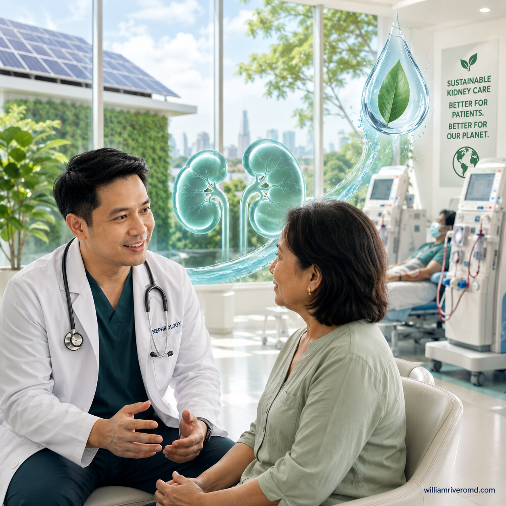
Green nephrology, redefined.
The original green-nephrology movement focused on recycling and waste in the dialysis unit. The 2026 KDIGO Green Dialysis report reframes the field: the modern definition is the delivery of high-quality kidney care that maximizes patient outcomes while minimizing environmental, social, and financial costs.
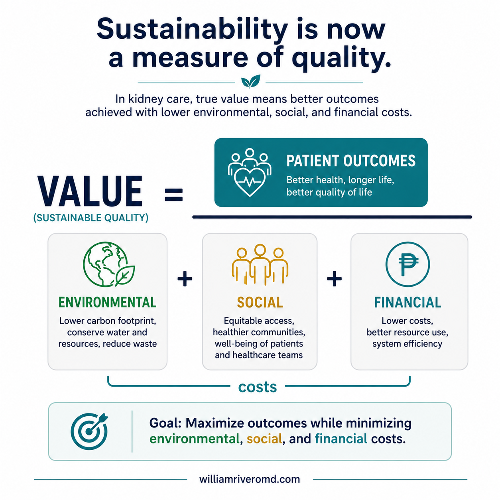
The KDIGO “triple bottom line”: sustainability is now a measure of quality.
The KDIGO "triple bottom line" value equation
Value = Patient Outcomes ÷ (Environmental + Social + Financial Costs). In plain terms: good kidney care is measured not just by how well patients do, but by how well they do relative to everything the care consumes — the planet, people, and money. Better outcomes for fewer resources means higher value.
Environmental cost
The water, electricity, plastic, and carbon emissions that go into your care. Dialysis in particular uses large amounts of water and energy, and creates a real carbon footprint that contributes to climate change.
Social cost
The time, travel, and burden placed on you, your family, and your caregivers — hours spent commuting to a unit, days away from work and home, and the strain that intensive treatment puts on daily life.
Financial cost
What the care costs — to you out of pocket, to your family, and to the wider health system. Resource-heavy treatments are expensive, and money spent inefficiently is money not available for prevention and other care.
The most powerful green interventions happen before dialysis.
The single most important sustainability intervention is not recycling — it is preventing kidney failure. KDIGO 2026 sets out a hierarchy, greatest impact first.
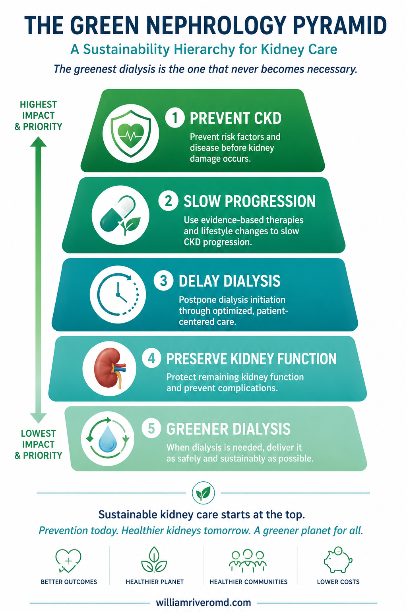
The most powerful green interventions happen before dialysis.
Level 1 — Prevent CKD (highest impact)
Stopping kidney disease before it starts. This means diabetes prevention, hypertension (high blood pressure) control, obesity reduction, smoking cessation, regular physical activity, and healthy nutrition. A kidney that never fails needs no dialysis at all.
Level 2 — Slow CKD progression
When kidney disease is present, the right medicines keep it from worsening: ACE inhibitors, ARBs, SGLT2 inhibitors, finerenone, and GLP-1 receptor agonists, together with proteinuria (protein-in-urine) reduction and blood-pressure control.
Level 3 — Delay dialysis
Pushing back the day dialysis is needed — through conservative management, nutritional optimization, and careful metabolic management of the body's chemistry.
Level 4 — Preserve residual kidney function
Once on treatment, protecting whatever kidney function remains: avoiding nephrotoxins (kidney-harming drugs and dyes), preventing hypotension (low blood pressure) during treatment, and using individualized dialysis prescriptions.
Level 5 — Greener dialysis
Only at the base of the pyramid does the work focus on the treatment itself: lower dialysate flow, water conservation, waste reduction, and energy efficiency. Important — but the smallest lever of the five.
The greenest dialysis is less dialysis.
Not every patient needs immediate, full-dose, thrice-weekly dialysis. Matching the dose to what each patient actually needs is good for patients and dramatically lighter on resources.
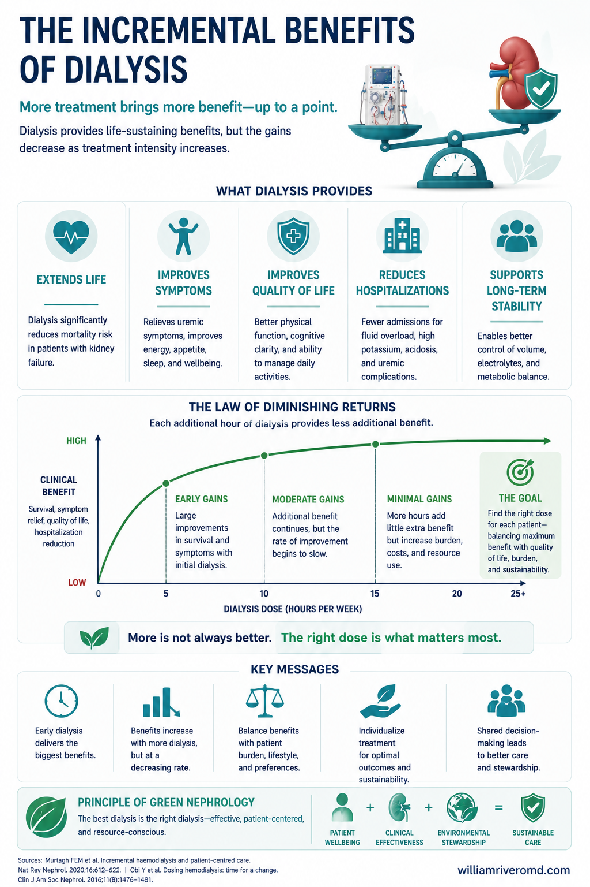
Less dialysis, done well — individualized and monitored.
Personalized dialysis initiation
Modern guidelines recommend starting dialysis based on clinical need — symptoms and complications such as fluid overload, hard-to-control potassium, or uremic symptoms — not on an eGFR number alone. Randomized data from the IDEAL trial showed no survival advantage to starting early. Beyond the benefit to the patient, the resource savings are real: delaying the start of hemodialysis by about a month can conserve up to roughly 6,000 liters of water.
Incremental dialysis
Incremental dialysis means beginning with a smaller, well-matched dose and increasing it over time as kidney function declines, rather than starting at full dose on day one.
Incremental PD
Peritoneal dialysis started with fewer exchanges. This approach is endorsed by the ISPD when small-solute clearance targets are met and residual kidney function is carefully monitored, and it helps preserve that residual function.
Incremental HD
Twice-weekly hemodialysis initiation in selected patients who still have meaningful residual kidney function, escalating to thrice-weekly as that function declines and clinical need increases.
Benefits
Less water and waste, lower cost, better preservation of residual kidney function, and improved quality of life — fewer hours tied to the machine, with the same clinical safety when done right.
Important
Incremental and personalized dialysis must be individualized and carefully monitored — adequacy, potassium, fluid status, and nutrition all need close follow-up. It is a deliberate, patient-centered choice and must never be confused with under-dialyzing to cut costs.
Food is a green kidney therapy.
One of the most hopeful ideas in modern kidney care: the foods that are healthiest for kidneys are often the most environmentally sustainable too.
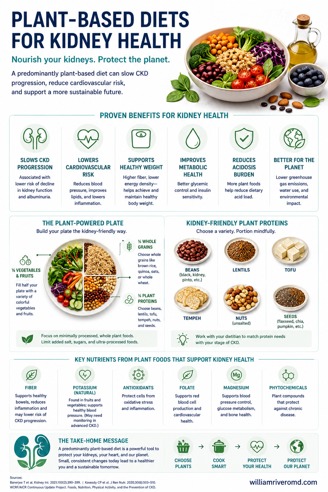
Kidney-healthy eating is also sustainable eating.
What to eat — and what to limit
Plant-predominant nutrition
Fruits, vegetables, legumes, whole grains, seeds, and nuts, with animal foods used sparingly. This pattern is linked to lower proteinuria, less metabolic acidosis, slower CKD progression, and a smaller environmental footprint. It aligns with the KDIGO 2024 CKD guideline, which prioritizes plant-based eating and minimizing ultra-processed foods.
Minimize ultra-processed foods
Cut back on instant noodles, processed meats, sugary beverages, and highly processed snacks. These are typically high in sodium, phosphate additives, and added sugars, and carry a heavy environmental cost for little nutritional value.
Functional nutrition
Fiber, resistant starch, prebiotics, probiotics, and synbiotics may help reduce uremic toxins by supporting a healthier gut microbiome (see our microbiome and fiber guides for more detail).
Safety
Diet changes in CKD need professional guidance to keep potassium and phosphorus in range and to avoid malnutrition. Do not adopt restrictive diets without your kidney team — the goal is healthier, sustainable eating that is safe for your specific stage and labs.
Greener dialysis, session by session.
The 2026 KDIGO report devotes a whole section to optimizing the dialysis we already deliver — wringing water, energy, and waste out of each treatment without ever lowering the dose. The levers span the prescription itself (incremental dialysis, right-sized dialysate flow) and the machinery behind every session.
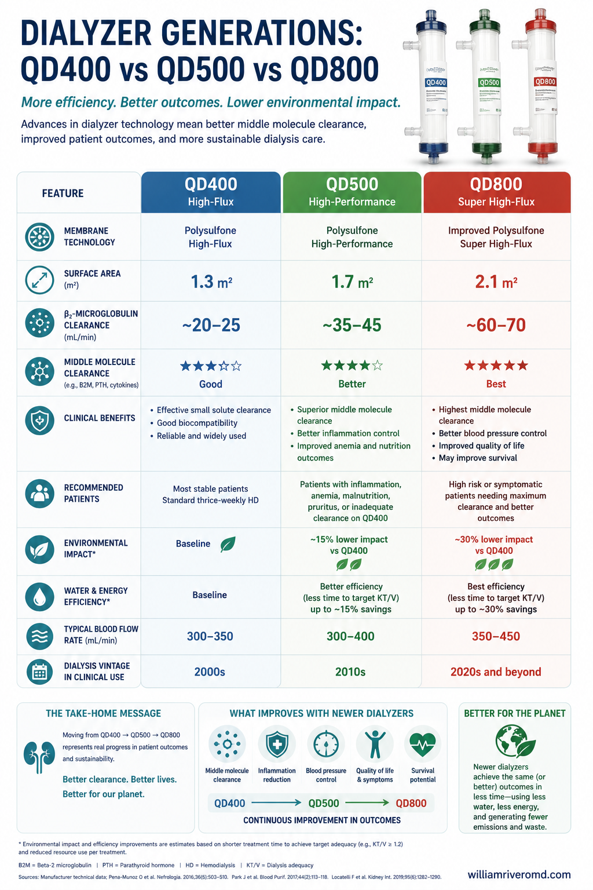
Higher dialysate flow mostly wastes water for little added clearance.
Right-size dialysate flow (Qd)
Studies show minimal difference in adequacy (Kt/V) between Qd 700, 500, and 400 ml/min once the dialysate-to-blood-flow ratio exceeds ~1.5:1. Qd 500 is a reasonable routine ceiling; Qd 400 works for many stable patients with monitoring. No new equipment needed — just deliberate prescribing.
Efficient reverse-osmosis (RO) plants
The RO system drives most of a unit's water and energy use. A modern plant uses about 357 L and 3.1 kWh per treatment versus 548 L and 7.2 kWh for an older one. Favor systems with variable-speed pumps, permeate recirculation, standby modes, and adjustable reject-recovery.
Right-size disinfection cycles
Align RO and machine disinfection with manufacturer guidance — current schedules are often more aggressive than the evidence requires. Rescheduling citric-acid heat disinfection at one center cut cycles by ~25%, saving roughly 160,000 L of water and 6.4 MWh per year.
Central / bulk acid concentrate
Switching from single-use acid-concentrate bags to bulk or dry-powder delivery cut concentrate use by about a third and saved roughly 6,773 kg of plastic per year in a 30-station unit — while also lowering delivery emissions.
Same dose, fewer resources
Every optimization here is additive: dialysis adequacy (Kt/V), sterility, and water-quality standards are never traded away. These are ways to deliver the same or better treatment using less water, energy, and plastic.
Hemodiafiltration — water-efficient when the flow ratio is optimized
Postdilution HDF is the dominant modality in Europe and many Asian centers. It typically runs at Qd 500–800 ml/min and infuses ~25 L of sterile substitution fluid per session — adding 30–75 L of water use on top of standard HD. The picture improves when the dialysate-to-blood-flow (Qd/Qb) ratio is actively managed. In a crossover trial (N = 54), targeting Qd/Qb 1.2 raised Kt/V by 3.5% while cutting dialysate use by 8% versus HD at Qd 500 ml/min. A simulation anchored in 26,031 real-world treatments found that optimizing Qd/Qb to deliver the same Kt/V as HD reduced total fluid consumption by 21%.
Optimized Qd/Qb coupling
Machines that automatically link dialysate and blood flow — targeting a Qd/Qb ratio of 1.2 and a Kt/V of ~1.7 — can make high-volume postdilution HDF more resource-efficient than conventional HD at Qd 500 ml/min. KDIGO 2026 calls this a promising but underutilized approach.
The caveat
Not all HDF machines allow automated flow coupling; where unavailable, Qd must be set manually without formal evaluation. HDF needs an extra substitution line and sterilizing filter but eliminates plastic-packaged rinsing solutions. The net environmental balance versus HD has not yet been fully quantified by life cycle assessment.
Online fluid production saves plastic and waste
HD machines that produce priming, blood-return, and bolus fluid online eliminate saline bags entirely. One 15-chair unit switching to online fluid production, combined with correct bicarbonate bag disposal, saved 21.5 tonnes of waste and ~26.8 tonnes CO₂e per year.
Water stewardship — dialysis runs on clean water.
Producing the ultra-pure water that dialysis needs is water-hungry, and a large share never reaches the patient. In a water-scarce, climate-exposed country, stewarding that water matters more every year.
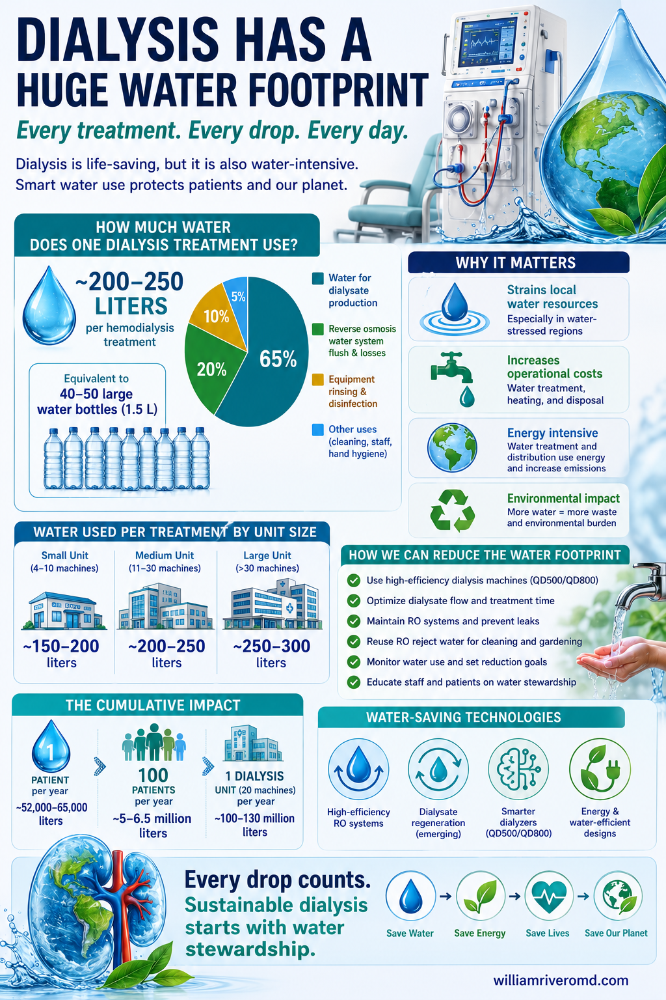
Where dialysis water goes — and where reject water can be reused.
Here is the journey, plainly: municipal tap water → reverse-osmosis (RO) purification → the dialysis machine → wastewater. Your blood can only safely meet water that is far cleaner than drinking water, so every clinic runs the supply through an RO membrane that strips out minerals, bacteria, and chemicals. The catch is built into the physics: to push pure water through the membrane, RO systems reject roughly 20–80% of the feed water — and that rejected portion, often perfectly clean, is usually sent straight to the drain.
Reclaim RO reject water
The water RO sends to drain is clean enough for many non-potable jobs — cleaning, watering grounds, and sanitation. One UK unit saved about 4,492,000 L per year this way, and reject water has even been used to run hydroponics and aquaponics systems.
Efficient RO systems
Newer equipment uses dramatically less. A modern RO plant used about 357 L and 3.1 kWh per treatment, compared with roughly 548 L and 7.2 kWh for an older system doing the same job.
Maintenance & leak prevention
Quietly dripping fittings and aging membranes waste water invisibly. Monitoring, routine maintenance, and tracking water use per treatment turn waste into a number staff can watch and shrink.
Circuit isolation
Reclaimed water is strictly non-potable and never touches the dialysis circuit. The ultra-pure water that contacts your blood is never reused — only the water diverted before it would have gone down the drain is repurposed for cleaning and grounds.
An established, recommended practice
Reusing RO reject water is already standard in places like Geelong, Australia, and the 2026 KDIGO report says it should be universally considered. Water-scarce settings — like much of the Philippines — have the most to gain.
Waste — the plastic mountain nobody sees.
A single hemodialysis session leaves behind a surprising pile of single-use plastic — multiplied by thousands of sessions a day nationwide.
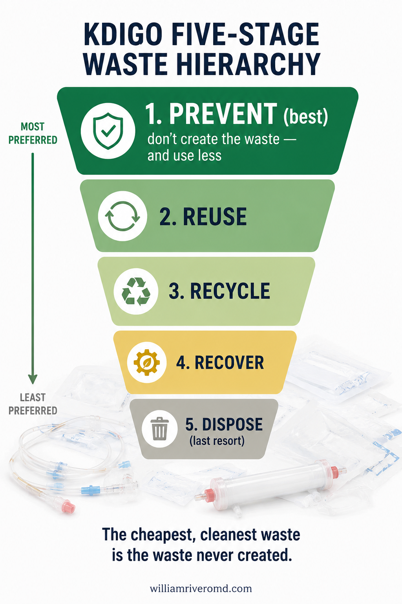
Prevention first: the cheapest waste is the waste never created.
Step into the cleanup after one treatment and the scale becomes clear. Each session is designed to be sterile and single-use, which keeps patients safe but generates a steady stream of plastic and packaging from start to finish.
Dialyzer
The plastic-cased artificial filter that cleans the blood — discarded after the session.
Bloodlines
Metres of tubing that carry blood to and from the machine, used once and thrown away.
Syringes
Single-use syringes for medications, heparin, and saline flushes.
Packaging
The sterile wraps, trays, and boxes every component arrives sealed inside.
PPE & gloves
Gloves, masks, and aprons changed between patients to protect everyone.
Dialyzer reuse — pragmatic in resource-limited settings
Reprocessing and reusing dialyzers reduces solid hazardous waste. The environmental benefit must, however, be weighed against the water, energy, and chemical disinfectants consumed by reprocessing — each carrying their own footprint. A 2012 systematic review found no mortality difference with reuse, but those studies used outdated membranes and are of limited relevance to modern practice. Some data suggest higher infection and hospitalization rates and reduced dialyzer performance with repeated use.
Resource-limited settings
KDIGO 2026 supports dialyzer reuse as a pragmatic cost-containment and access-expansion strategy in low- and middle-income country settings. New automated reprocessing systems using environmentally safer cleaning technologies (e.g., ClearFlux) may improve the safety and environmental profile of reuse.
Regulatory landscape
Dialyzer reuse is currently prohibited in Japan, Australia, and most EU states. The Philippine dialysis network, where reuse remains an option in cost-constrained units, should ensure that if reuse is practiced, it follows standardized disinfection and safety protocols and is not used to cut costs at the expense of patient safety.
The waste hierarchy — prevention comes first
Not all waste-handling is equal. The 2026 KDIGO report ranks options on a five-stage waste hierarchy — the greenest choice always sits at the top, because the cheapest, cleanest waste is the waste that is never created in the first place.
Prevent
Don't create the waste in the first place — and use less per treatment. This is the top priority.
Reuse
Use suitable items again where safe.
Recycle
Recover clean materials into new products.
Recover
Capture energy or resources from what's left.
Dispose
Landfill or incineration — the last resort.
Segregate correctly
A no-cost step with outsized impact. Directing hemodialysis waste into the right stream cut hazardous waste by up to 7 kg per treatment — and hazardous disposal is far more polluting and costly than general waste.
On-site sterilization
Treating hazardous waste in-house with an autoclave can cut its disposal CO₂e by about 85% compared with shipping it off-site for incineration.
Design out waste
Right-size packaging, recycle clean PVC, and use manufacturer take-back programs so materials return to the maker instead of the landfill.
Never compromise infection control
Only genuinely clean, non-clinical material is recyclable. Anything that contacted blood stays in the clinical stream, and all segregation must follow DOH and DENR rules.
Building design — sustainability starts with the walls.
The physical design of a dialysis unit determines much of its lifetime energy and water footprint. The 2026 KDIGO report highlights building design as an often-overlooked but high-leverage sustainability domain.
Passive House standards can cut energy use by up to 80%
Buildings meeting Passive House standards — continuous insulation, minimal thermal bridging, airtight construction, high-performance windows and doors, heat-recovery ventilation — reduce heating and cooling demand by up to 80% compared with conventional construction. For dialysis units that run climate control continuously to maintain sterile conditions, this is transformative.
New builds
Integrate green infrastructure from the outset: central acid-delivery loops, RO reject-water reclamation plumbing, solar panel space, energy sub-metering per station, and green spaces for patient experience and passive cooling. Features designed in cost far less than features retrofitted.
Retrofitting existing units
Retrofitting functional units can deliver significant benefits and is often preferable to demolition — but it typically costs more than building green from the start. Priority retrofits: LED lighting, efficient cooling, RO reject-water reclamation plumbing, and waste compactors or shredders to reduce landfill volume and enable recycling of plastics and cardboard.
Philippine context
Many Philippine dialysis units occupy converted commercial spaces, limiting full passive-house upgrades. Even so, sub-metering water and electricity per station, reclaiming RO reject water, and switching to LED and efficient air conditioning are achievable in almost any existing facility — and deliver both sustainability and cost savings.
Future green-dialysis technologies.
A wave of innovation could dramatically cut the resources dialysis needs — though each must be proven safe and undergo life-cycle assessment before wide use.
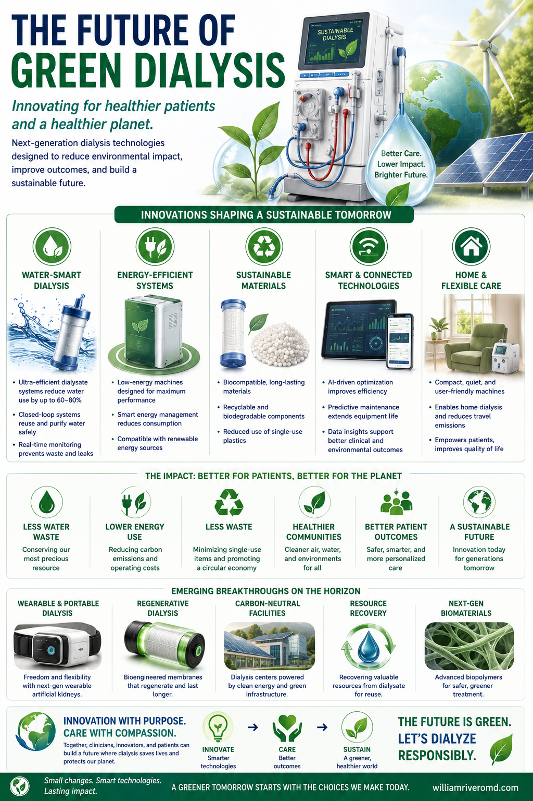
Innovations that could dramatically cut dialysis resource use.
None of these are magic, and none replace the everyday wins of saving water and sorting waste. But together they hint at a future where dialysis is lighter on the planet without being lighter on care.
Wearable & portable hemodialysis
Compact devices a patient could carry, freeing them from the fixed dialysis chair and long clinic stays.
Sorbent dialysis & dialysate regeneration
Closed-loop systems that scrub and recycle spent fluid instead of discarding it, cutting water use by ~95–99% in HD prototypes and making portable and wearable devices possible.
Water-efficient RO & forward osmosis
Lower-pressure, lower-energy purification methods that produce far less reject water than today's RO membranes.
Point-of-care PD fluid generation
Making peritoneal dialysis fluid on site, avoiding the fuel and emissions of trucking heavy prepackaged bags across the country.
Heat & resource recovery
Spent dialysate leaves at body temperature; globally that discarded warmth represents about 1,700 GWh/yr of recoverable heat, alongside nutrients that could be reclaimed.
AI-assisted dialysis optimization
Software that tunes prescriptions and clinic operations to hit adequacy targets while using the least water, energy, and consumables.
Promising — but prove it first
Every innovation needs rigorous life-cycle assessment so that a new device does not simply shift the environmental burden somewhere less visible.
Making sustainability the default — metrics, policy, and industry.
Individual champions and motivated units can move the needle, but KDIGO 2026 is unambiguous: sustained, system-level change requires standardized measurement, supportive regulation, aligned reimbursement, and industry accountability.
Measuring what matters
You cannot improve what you do not measure. The report proposes standard unit- and system-level metrics:
| Level | Metric | How to Measure |
|---|---|---|
| Unit | Water use per treatment (L/treatment) | Metered incoming feed water ÷ treatment count |
| Unit | RO plant efficiency — recovery rate (%) | [(Input flow − reject flow) ÷ input flow] × 100 |
| Unit | Electricity per treatment (kWh/treatment) | Submeter RO + HD machines; divide by treatment count |
| Unit | Waste per treatment (kg, by type) | Weigh segregated streams (plastic, sharps, dialysate) |
| Unit | Recycling rate (%) | (Weight recyclables collected ÷ total recyclable generated) × 100 |
| Unit | Carbon per treatment (kg CO₂e) | Sum consumables + energy + waste + transport emissions |
| System | Annual water per patient-year | Aggregate meter readings ÷ total patient-years |
| System | Modality mix (% by modality) | Registry or national audit |
| System | Cost savings from sustainability (local currency/yr) | Baseline cost − current cost (energy, water, waste, transport) |
Policy levers that embed sustainability
Environmental standards & reporting
KDIGO recommends regulators set clear targets for water, energy, and waste; require dialysis centers to track and publicly report key environmental metrics; and offer accreditation or financial incentives for facilities that meet or exceed standards — with penalties for non-compliance.
Reimbursement aligned with value
Current volume-based reimbursement incentivizes more treatments rather than better ones. Models aligned with value-based health care — measuring patient outcomes relative to environmental, social, and financial costs — create room for individualized, incremental, and home-based therapies to flourish.
Industry accountability
Most dialysis-related carbon emissions arise from the supply chain. KDIGO calls for mandatory public disclosure of cradle-to-grave environmental data per dialysis product, and endorses "servitization" — service-based contracts in which suppliers retain responsibility for maintenance and end-of-life management, incentivizing durability over planned obsolescence. "Reverse logistics" programs that retrieve PD bags and dialysis machines for recycling or refurbishment are a key industry lever.
Philippine priorities
Engaging the Philippine Society of Nephrology, PhilHealth, and the ISN's GREEN-K initiative to align reimbursement with value — not volume — and to mandate environmental metric reporting from accredited dialysis centers would unlock national-scale gains that no individual unit can achieve alone.
Expanding dialysis access without expanding environmental injustice
KDIGO 2026 explicitly calls out the risk that expanding dialysis access in low- and middle-income countries — including Southeast Asia — could aggravate pollution, water scarcity, and environmental injustice if done without sustainability planning. The imperative is to grow access and sustainability together, not sequentially.
Start with what is safe, cheap, and scalable.
This guide must not read like a European sustainability document. In the Philippines, the most impactful green-nephrology steps are interventions that improve care, reduce cost, save water and electricity, and require little or no new equipment.
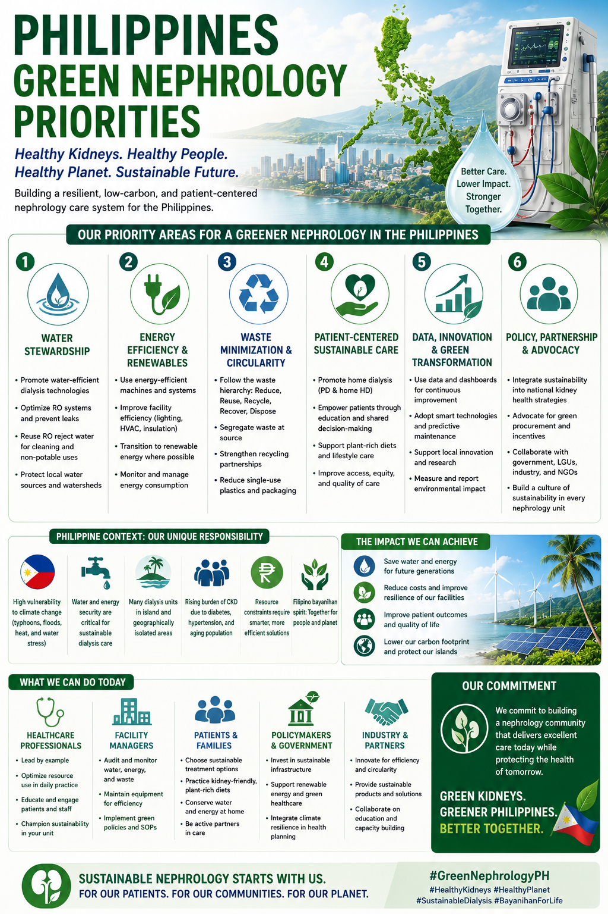
Start with what is safe, cheap, and scalable.
The core idea
The biggest Philippine sustainability gains come from thoughtful clinical decisions, nutrition, water and energy stewardship, waste segregation, and individualized dialysis — not expensive technology. Almost every priority below can be started with the staff, machines, and budget a unit already has.
Priority 1 — Use dialysate flow wisely
For stable patients, Qd 400–500 ml/min delivers the same adequacy (Kt/V) as 700–800 ml/min — with less water, less concentrate, and lower energy cost. Qd 500 is a sensible routine ceiling; Qd 400 is appropriate for many patients with monitoring of URR, potassium, phosphorus, and nutritional status. Reserve higher Qd for large body size, poor adequacy, severe hyperkalemia or hyperphosphatemia, or shortened treatment time. No capital cost — just deliberate prescribing.
Priority 2 — Improve water stewardship
RO systems discard 20–80% of feed water as reject. Reclaim it for cleaning or grounds use (one UK unit saved ~4.5 million L/year this way), fix leaks promptly, and track water use per treatment as a standard quality metric.
Priority 3 — Reduce electricity waste
Switch to LED lighting, power down machines between shifts, keep preventive maintenance current, and use rational cooling for the treatment room. Most savings here cost nothing.
Priority 4 — Improve waste segregation
Sending all dialysis waste down the infectious stream is more polluting and more expensive. Keep sharps and blood-contaminated items in the hazardous stream; clean packaging and uncontaminated items are general waste; separate recyclable plastic and paper where local facilities accept them. Correct segregation can cut hazardous waste by up to 7 kg per treatment.
Priority 5 — Use consumables more efficiently
Avoid opening sterile packs before they are needed, standardize kits to what is actually used, and audit discarded supplies periodically. Efficiency here never means cutting infection-control standards.
Keeping patients healthy and out of the hospital prevents enormous downstream resource use — admissions, imaging, medications, and emergency transport. Adherence to the dialysis schedule, fluid control between sessions, blood-pressure and diabetes management, AV-fistula care, and early reporting of warning signs are the most powerful tools patients and caregivers have. A hospitalization prevented is often a larger sustainability gain than any recycling initiative.
Your green-kidney checklist.
Sustainability is not only for hospitals and policymakers — patients and families have real levers, and the biggest ones protect both your kidneys and the planet.
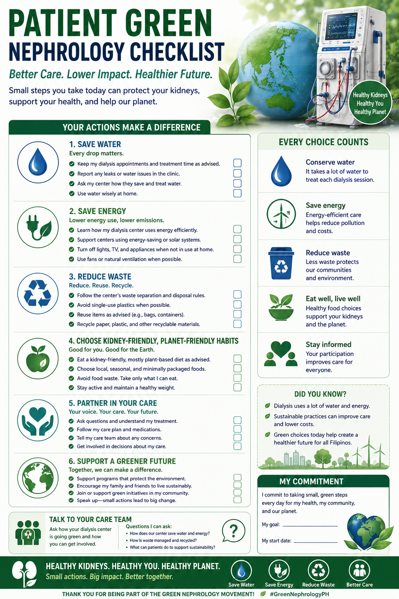
What you can do today — prevention is the greenest medicine.
If you have CKD
- Control blood pressure.
- Control diabetes.
- Stop smoking.
- Exercise regularly.
- Reduce processed foods.
- Increase dietary fiber.
- Maintain a healthy weight.
If you are on dialysis
- Protect your residual kidney function.
- Prevent infections.
- Avoid excessive fluid gains between sessions.
- Attend your scheduled treatments.
- Ask your nephrologist about an individualized dialysis prescription.
Prevention is the greenest medicine
Every item that keeps you healthier also lightens the footprint of your care — prevention is the greenest medicine.
Green nephrology, in one idea.
Green nephrology is not primarily about recycling.
It is about preserving kidney health, preventing kidney failure, delaying dialysis when it is safe to do so, protecting residual kidney function, and — when dialysis is needed — delivering it using the least resources necessary to achieve excellent patient outcomes.
In the Philippines, the most impactful sustainability interventions are not expensive technologies but thoughtful clinical decisions, better nutrition, water stewardship, energy efficiency, waste segregation, and individualized dialysis prescriptions.
The thesis of this guide
The greenest dialysis treatment is the one that never becomes necessary.